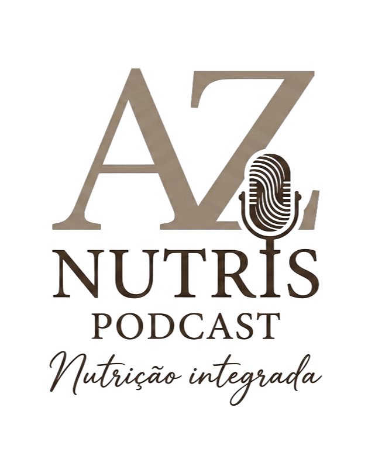
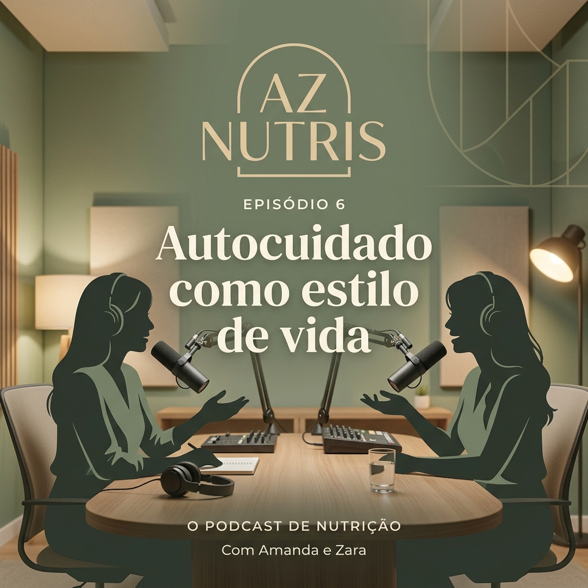
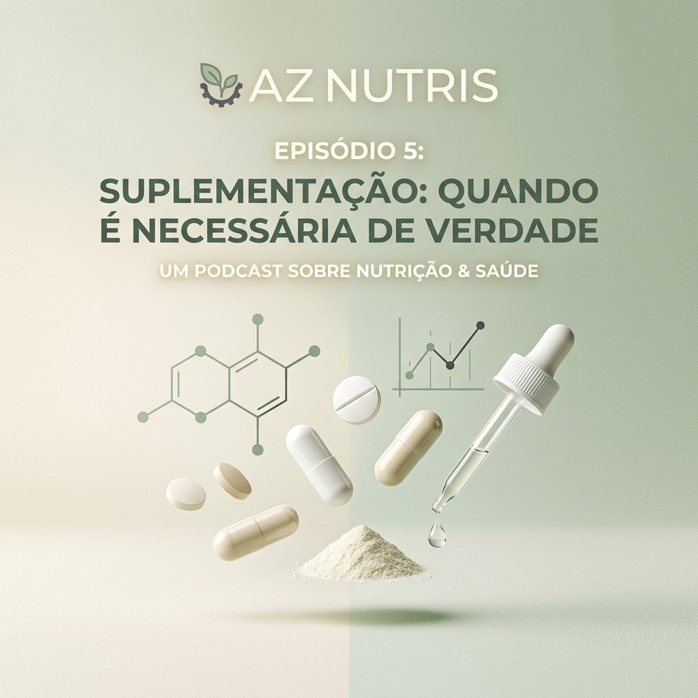
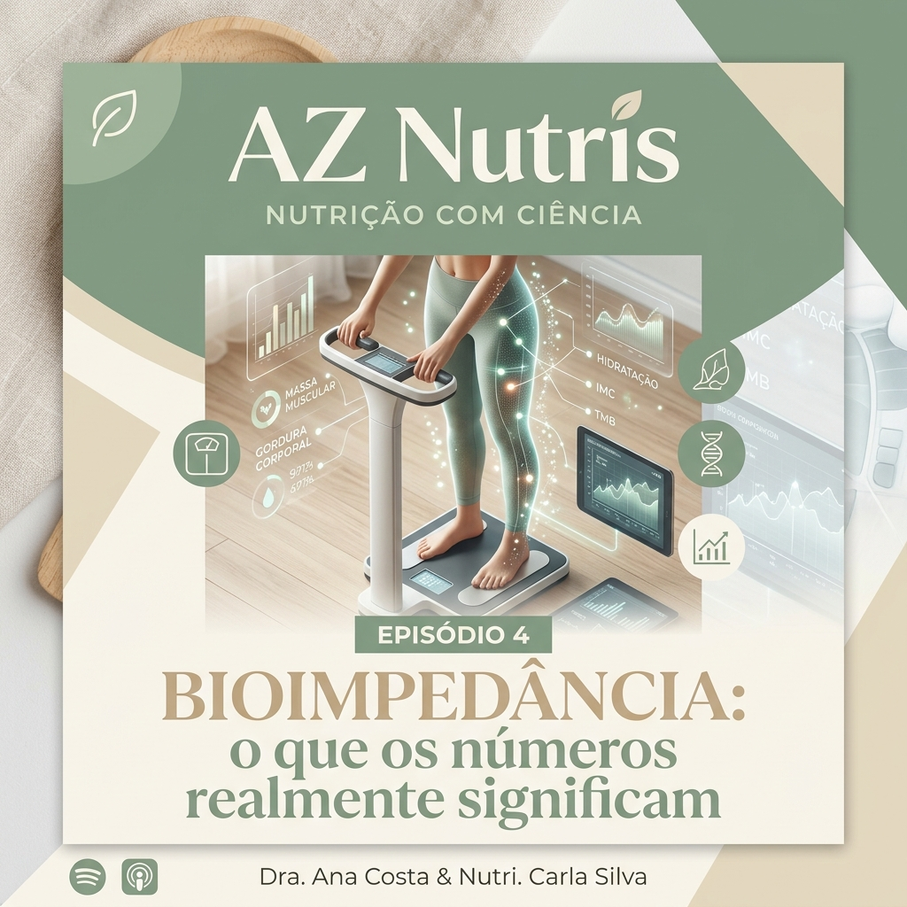
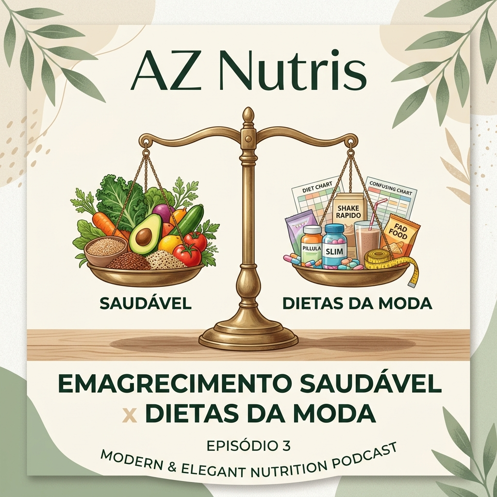
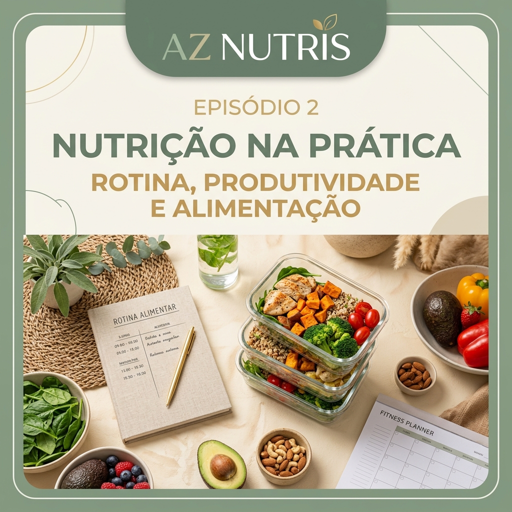
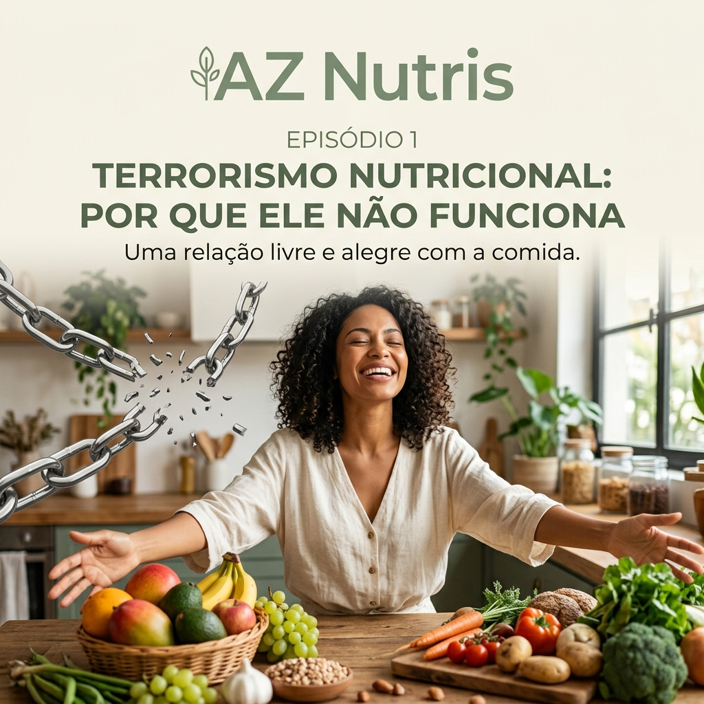

Conversas sobre nutrição, ciência e autocuidado.
A cada episódio, a Dra. Cibele Lopes e a Dra. Jéssica Kassab trazem para o papo os bastidores da nutrição clínica: bioimpedância, emagrecimento saudável, suplementação e o que realmente funciona — sem terrorismo nutricional.


Autocuidado como estilo de vida
Por que autocuidado vai muito além da estética. Neste episódio, a Dra. Cibele e a Dra. Jéssica conversam sobre como transformar pequenos hábitos diários em uma rotina de bem-estar sustentável — sem restrição e sem culpa.
Todos os episódios
Autocuidado como estilo de vida
Como transformar pequenos hábitos diários em uma rotina de bem-estar sustentável, sem restrição e sem culpa.

Suplementação: quando é necessária de verdade
Mitos e verdades sobre suplementos: quando fazem sentido e os riscos de se automedicar sem orientação profissional.

Bioimpedância: o que os números realmente significam
Entenda os dados do exame InBody 270S e como interpretar massa magra, gordura visceral e água corporal.

Emagrecimento saudável x dietas da moda
Por que dietas restritivas raramente funcionam a longo prazo, e como construir um processo sustentável.

Nutrição na prática: rotina, produtividade e alimentação
Dicas práticas para quem tem uma rotina corrida se alimentar bem, sem abrir mão do prazer de comer.

Terrorismo nutricional: por que ele não funciona
O episódio de estreia: um papo sincero sobre culpa alimentar e o discurso do "tudo ou nada".